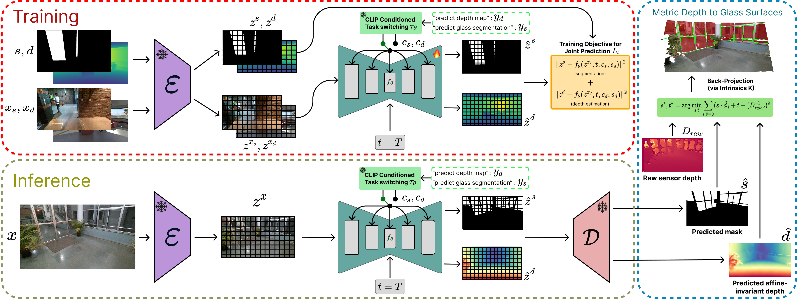
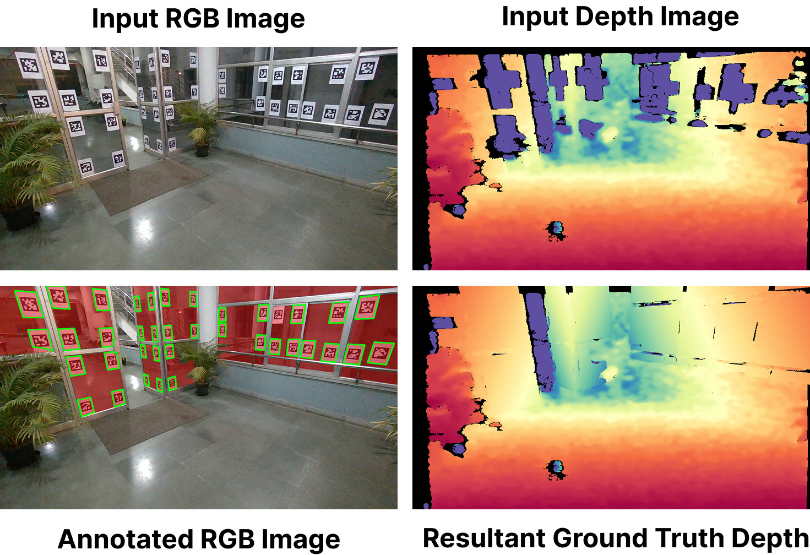
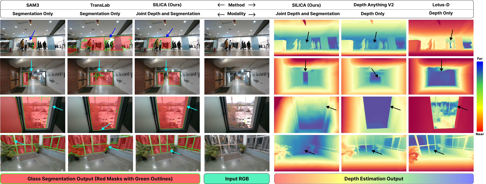
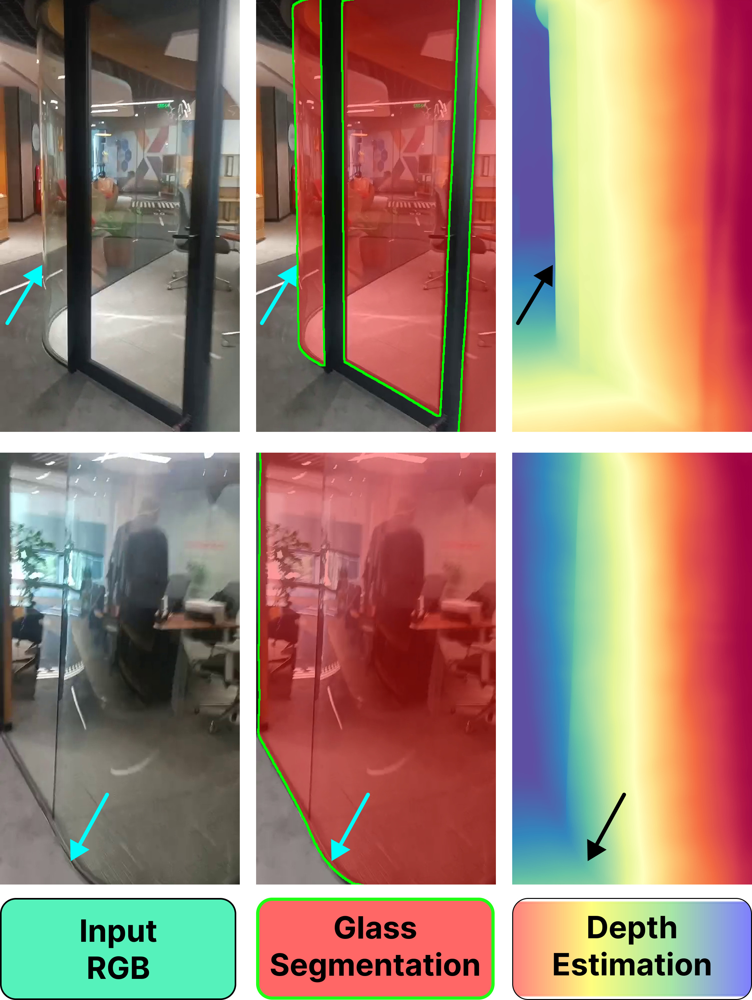
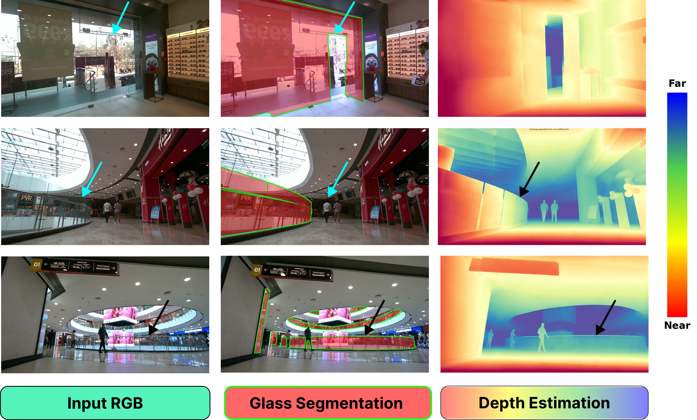

Abstract
Standard depth sensors systematically fail on transparent surfaces, creating corrupted 3D maps and severe navigation hazards. While specialized hardware sensors can detect glass, they lack modularity and have extensive hardware dependencies. Consequently, learning-based monocular depth estimation has emerged as a compelling alternative. However, domain-specific glass-aware monocular depth estimators struggle with unfamiliar indoor layouts; restricted by the severe scarcity of real-world glass depth annotations, they fail to generalize zero-shot to new settings. This motivates us to explore whether the extensive priors of text-to-image diffusion models can enable generalizable perception of transparent surfaces. We introduce SILICA, a unified pipeline leveraging these priors to jointly predict glass segmentation and glass-aware depth. This mutual information exchange establishes a robust spatial hierarchy, entirely eliminating the need for paired real-world glass depth annotations. Subsequently, we use the predicted segmentation mask to explicitly filter incorrect glass depth points from standard sensors, recovering accurate metric glass depth for downstream 3D mapping and autonomous collision avoidance. Supported by our novel Mirage 18k dataset, extensive experiments demonstrate that SILICA achieves remarkable zero-shot transfer across diverse, unseen environments, outperforming state-of-the-art models by almost 20% and setting a new benchmark for transparent surface perception.
The SILICA Pipeline

1. Training
SILICA establishes a robust spatial hierarchy by learning from a mixture of modalities. For segmentation, the model is trained on diverse real-world glass segmentation datasets, aggregating samples from our custom Mirage 18k dataset along with 3DRef, Trans10k, GDD, GSD-S, and GW-Depth. For depth estimation, we utilize the synthetic Hypersim dataset, completely bypassing the need for explicit real-world glass depth annotations. To manage this dual-task framework, SILICA injects task-specific text embeddings directly into the U-Net's cross-attention layers using CLIP. This explicit routing drives a mutually beneficial information exchange, enabling the network to learn accurate depth predictions for transparent surfaces solely from diffusion priors.
2. Inference
During inference, a single input RGB image is processed through the network to simultaneously predict a binary glass segmentation mask and a glass-aware, affine-invariant depth map. To recover real-world metric scale, we retrieve noisy depth samples from a standard depth sensor and explicitly filter out the corrupted readings on transparent surfaces using our predicted segmentation mask. Finally, a linear least-squares optimization is solved over the remaining reliable background points to align the affine-invariant predictions, successfully outputting an accurate, artifact-free 3D metric depth map for the entire scene.
The Mirage-18k Dataset

To bridge the massive domain gap in transparent surface perception and strictly evaluate zero-shot transfer, we introduce the Mirage-18k Dataset. It contains over 18,000 highly diverse indoor RGB images paired with manually annotated binary glass segmentation masks.
Because standard depth sensors fail on glass, acquiring ground-truth metric depth for evaluation required a specialized collection protocol. We recorded stationary scenes twice: first with temporary opaque markers placed on the glass panes to capture reliable metric depth, and then a second time from the exact same pose after the markers were removed. By solving an overdetermined system via least-squares optimization in inverse depth space, we successfully reconstructed dense, artifact-free metric depth maps for transparent surfaces.
Qualitative Comparison with State-of-the-Art

SILICA consistently delivers precise joint glass segmentation and glass-aware depth estimation, even in highly challenging scenarios. When compared to current State-of-the-Art (SoTA) depth and segmentation models, SILICA maintains its performance in scenes with busy backgrounds, extreme close-ups near glass windows, and half-open glass doors. While other methods often hallucinate flat glass or miss structural nuances entirely due to background saliency, our joint prediction approach correctly identifies and predicts accurate depth for complex open and closed door configurations.
Zero-Shot In-The-Wild Performance
SILICA demonstrates exceptional zero-shot generalization in highly complex, unseen environments. By establishing a strict spatial foreground-background hierarchy, it successfully resolves severe visual ambiguities—such as busy backgrounds behind glass and half-open transparent doors—outperforming current state-of-the-art models by up to 20%.


BibTeX
@misc{r2026silicarepurposingdiffusionpriors,
title={SILICA: Repurposing Diffusion Priors for Joint Glass Segmentation and Depth Estimation},
author={Tarun R and Anuj Verma and Laksh Nanwani and Sourav Garg and K. Madhava Krishna},
year={2026},
eprint={2607.24249},
archivePrefix={arXiv},
primaryClass={cs.CV},
url={https://arxiv.org/abs/2607.24249},
}